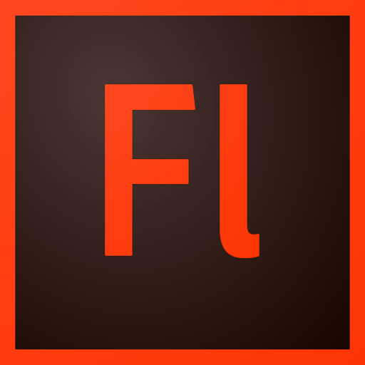
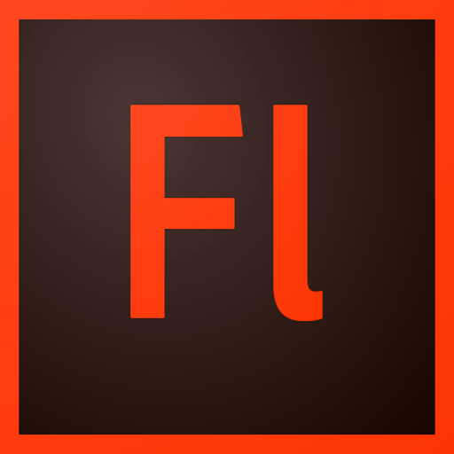

Christian
Sơn
Nguyễn
Cardist // Video Editor // Web Developer // Graphic Designer // MNHS IB Class of 2018
Personal Introductory
I have always been fond of Cardistry at a very young age. Some of you may wonder what exactly is Cardistry? Well, it’s basically what it sounds like: an art form dealing with cards. The manipulation of cards to perform intricate patterns with cards while regarding their physical limitations is quite exciting, what is was brought me to coding. After performing card magic and art for five years, I began to pick up frontend design. Web development caught my attention the most because the amount of code may seem limitless, but the design product is limited to form a perfect website. Along with my artistic side, I’ve also developed a pastime of video editing for school projects and graphic designing for personal works.
In my free time, I dedicate myself to graphic design works, video editing tasks, and web development projects all whilst enjoying a good cup of coffee or tea.
SCHOOL CAREER
I am currently a senior at Millard North High School whilst being educated in the International Baccalaureate Diploma Program. At school, I tend to involve myself in the clubs of Mathematics, Computer Science, Robotics, Ping Pong, and various natural sciences while maintaining my own club – Cardistry Club.
Utilised Applications

 



During my constant growing experience in the digital age, I have learned to develop a specific skillset for front end development. For coding, I mainly utilise Brackets by Adobe Systems over other coding platforms due to the fact that it is very open sourced and simplistic. I have also learned to use other Adobe System products that are shown above for graphic design and sometimes video editing if need be. My main video editing and compiling program would be Sony Vegas Pro 15 Suite Edition.
OTP
OMAHA TEST PREPARATORY
The Omaha Test Preparatory website was developed for a group of friends who had started up a local tutoring service. Being asked to help develop their site was quite the pleasure for most of the site was built upon prototype code that I had recently written before. The main structure of the website consisted of a first attempt at a parallax based main frame as well as sectioning of information in columns. Another feature that was tested on this site was the utilisation of a media query for the bridging between desktop and mobile viewing.
PERSONAL
MNHS IB AGENDA
A constant struggle bus at school for anyone in the International Baccalaureate program was managing to keep track of all of the assigned tasks. This project was a first attempt at using local storage on a larger scale than normal across different HTML documents (which I had never done before). The agenda was only developed to be in landscape view for the fact that it would be put on the school issued laptops. This idea was brought to my attention from a simple notepad, but was further developed by allow the user to show tasks relevant by class hours.
MILLARD NORTH
MNHS MATH CLUB WEBSITE
This website project was my second asked favour at school by a mate who was the president of Math Club in my senior year. This specific project faced a lot of issues considering that the template I first used was the final template of the OTP project. The JavaScript was rewritten to accompany the interactivity but led to visual glitches sometimes, and the styling was not compatible from the template causing text to render out of specified areas. All these problems were later resolved by importing the first template of my digital portfolio project (an older version of this design you see).
MILLARD NORTH
MNHS ROBOTICS CLUB WEBSITE
The robotics club website was designed to be a informative website used in a competitive environment of VEX Robotics tournaments. Considering that this website could qualify team 5069B from MNHS to the Worlds Tournament, I dedicated a lot of hours (40+) to make sure the code was flawless. The code for the website was build completely from scratch and was inspired by ideas created from other web developers. The originality of this project was to demonstrate the creativity and ingenuity behind team 5069B that would stand above others who used professionally made templates (ex: wix.com).
#noobs
PERSONAL
PORTFOLIO
Although not my first main product of coding, this website was built to display some type of portfolio of all of my work (similar to a résumé). Inspired by an encouraging brother and my college application, I set out to build something that would make me stand out from other applicants and just something to occupy my spare time. Finishing the first template of a solid website in about four hours, I set out in this pattern of archiving and editing. This cycling of archiving and editing allows me to test new templates for future projects that may arise. Across some of my previous projects, you may see the progression I’ve made!
Community
PORTFOLIO / résumé
As a side project when completing my first build of my own portfolio, my design method for informational display was appealing to some of my mates. Utilising my first template of my digital portfolio, I ported over all of the information from his résumé and rewrote some template element ID’s to suit logic of the website code. From there I helped him set up his GitHub account and repository for live viewing through the master branch. This project was significant in the fact that it was my first web development project that was asked for outside of a class.
OTT
Omaha Teen Tutoring
By taking a quick break from constantly updating the robotics website from bugs to newer and cleaner user interfaces, I began to develop this website for my friends’ recent tutoring service merging with another group. This specific build is a quick and simple addition of information and tweaking of one of my common templates from previous projects that they liked. In this project, I found more uses of JQuery as well as writing .less (but was not used) for styling. The reason for not having the .less file was due to some redundancy in code compared to the .css file I already had.
School / Community
Chrome Custom Home
Utilising the school issued laptop provided many uses for it, but considering it was handed out by the school system the laptop contained many restrictions. One of the constant nuisances that everyone came across was that when the user opened up the google chrome application, the laptop would try to navigate to the MNHS homepage, the MSN news page, and as well as trying to connect via the school’s filter and VPN. You can imagine the painstaking amount of time it took to load Google Search… so I developed this to be loaded upon opening Google Chrome.
IB English HL II
Poetry Analysis
This projects was created as an extension of a previous assignment in class. As a student, my goal was to develop a website that displayed my work and some correlation to the curriculum. Deciding to not use the basic Google Sites, I instead added this assignment to my personal domain.
christian.nguyen.3114
@AsianDaMagician
christian.the.magician
Skype
cnguyen81441@gmail.com
Gmail
cnguyen8144@gmail.com
Snapchat

cnguyen8144-doc
Github
soncnguyen
Christian Nguyen (Greater Omaha Area)